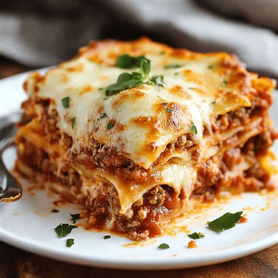

Lasagna Recipe

Yummy lasagna made from scratch
Lasagna is a classic Italian-inspired dish made with layers of pasta, rich meat sauce, creamy ricotta cheese, mozzarella, and Parmesan. Baked until golden and bubbly, it is a comforting meal that is perfect for family dinners or special occasions. While there are many variations, the traditional recipe combines hearty flavors and simple ingredients to create a satisfying dish that has remained a favorite for generations.
Ingredients:
Steps:
- Preheat the oven to 375°F
- Brown the ground beef (or sausage) and drain the excess fat
- Stir in the pasta sauce and let it simmer for a few minutes.
- Mix the ricotta, egg, Parmesan, and seasonings in a separate bowl.
- Layer the baking dish with sauce, noodles, cheese mixture, mozzarella, and repeat.
- Finish with a final layer of sauce and plenty of mozzarella cheese.
- Bake covered for 45 minutes, then uncover and bake 15 more minutes until bubbly.
- Let the lasagna rest for 10–15 minutes, then slice and serve.
Home